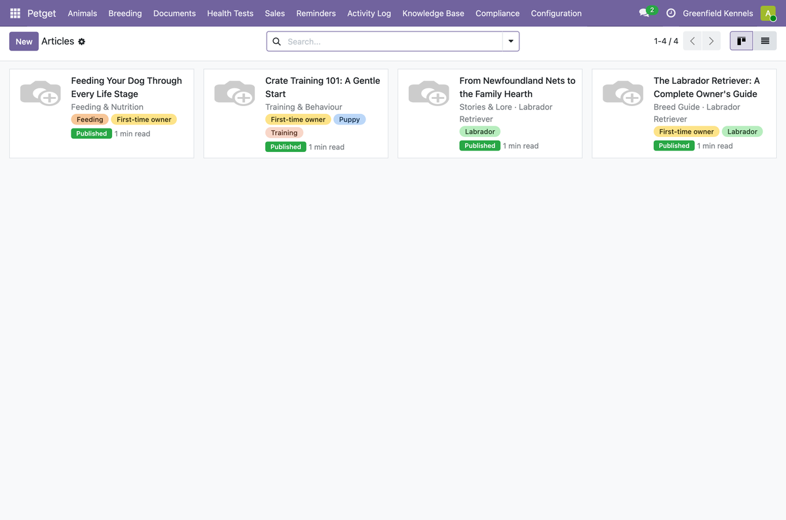
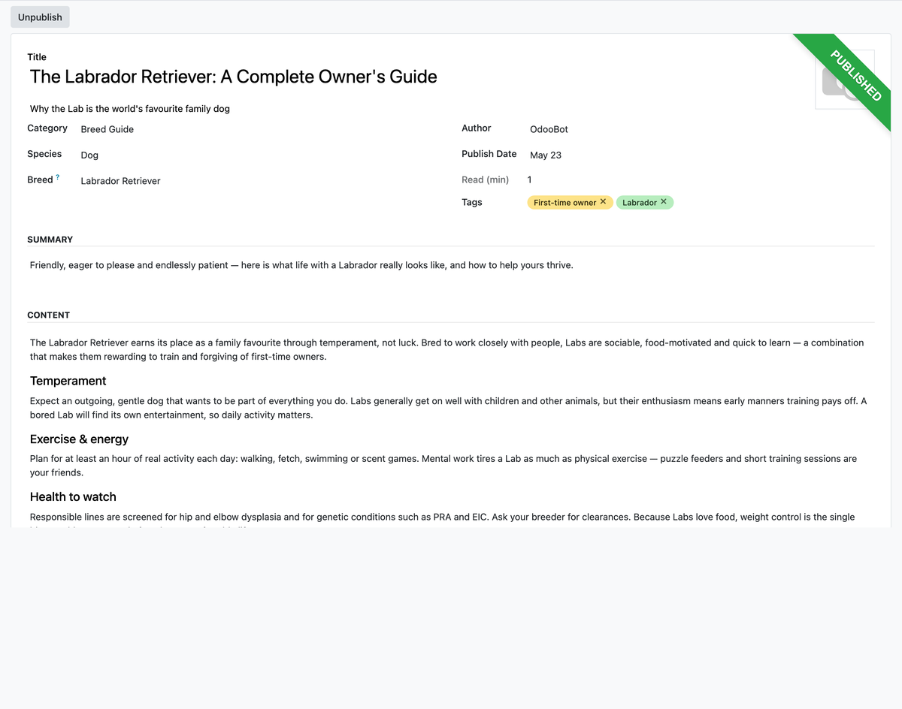

Breed guides, care tips and stories that help owners love and understand their dog.
A flexible content library you control. Write rich articles, organise them by category and tag, and link them to a breed so owners see what is relevant to the dog they actually have.
Owners who understand their dog have healthier, happier pets — and a stronger relationship with the breeder who guided them. That trust is what turns one sale into referrals.
Browse the library by category, breed and tag

Rich, breed-linked articles owners actually read

This module is free and open source (AGPL-3). For a production kennel system — deployment, data migration, compliance and training — we deliver a turnkey build.
Professional implementation: AUD 15,000–20,000 (custom quote).
Get a custom quote at petnaly.com →
Questions? Email hello@petnaly.com.